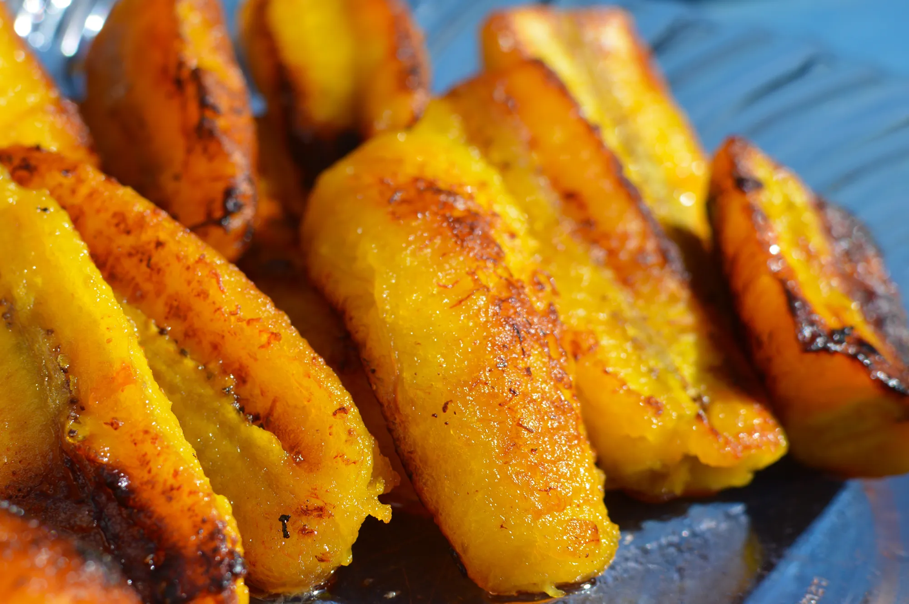

ALLOCO

Description
Ingrédients
- 13.5 cl d'huile
- 1/4 cuilleres a cafe de gingembre frais moulu
- sel
- 1.5 bananes plantain bien mûres
Étapes
- Eplucher les bananes. Trancher les bananes épluchées en petits morceaux. Les parsemer de gingembre tout en remuant.
- Chauffer l'huile dans une poêle. Y faire frire les tranches de bananes jusqu'à ce qu'elles soient dorées.
- Les égoutter sur du papier absorbant et les saler au goût.